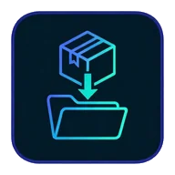

22 commandes
Initialiser la Memory Bank, analyser un projet, vérifier la doc, créer personas, commandes et skills.
La Memory Bank AI-KIDO est packagée pour neuf assistants. Choisissez le vôtre, relisez ce qui sera écrit, appliquez.
Le même contenu est livré à chaque assistant, adapté au format qu'il comprend.
Initialiser la Memory Bank, analyser un projet, vérifier la doc, créer personas, commandes et skills.
Vérité, RACI, validation, exploration, index, plus un orchestrateur qui s'adapte à votre assistant.
Analyse de projet, mise à jour, orchestration, recherche et règles de structure.
Des règles immuables qui gardent la Memory Bank structurée, traçable et légère pour un LLM.
Rien n'est écrit en silence : un plan liste chaque fichier, vous confirmez, vous relisez.
Mettez à jour, migrez ou retirez l'intégration, sans toucher à la connaissance du projet.
Chaque paquet est généré depuis la même source et publié sous un tag de version immuable.
| Assistant | Paquet | Comment AI-KIDO apparaît |
|---|---|---|
| Claude Code | claude-code | Plugin de marketplace avec commandes slash, Skills et agents |
| Claude Cowork | claude-cowork | Plugin de compte avec commandes slash, Skills et agents |
| VS Code / GitHub Copilot | copilot-vscode | Agent Plugin avec prompts slash, Skills et agents |
| Agent de code GitHub Copilot | copilot-github | Skills, agents et instructions de projet dans le dépôt |
| Codex CLI et IDE | codex | Skills, agents personnalisés et instructions de projet dans l'espace de travail |
| Kiro CLI | kiro-cli | Skills, commandes slash, agents et instructions de projet dans l'espace de travail |
| Zoo Code | zoo-code | Commandes slash, modes personnalisés et instructions de projet dans l'espace de travail |
| Roo Code | roo-code-legacy | Commandes slash, modes personnalisés et instructions de projet dans l'espace de travail |
| Google Antigravity | antigravity | Skills, agents et instructions de projet dans l'espace de travail |
Plugin (Claude Code, Cowork, VS Code) : une installation pour votre compte. Espace de travail (Copilot, Codex, Kiro, Zoo, Roo, Antigravity) : des fichiers relus dans chaque projet.

1Clonez le tag de version et choisissez le dossier de votre assistant.
Choisissez STANDARD, LIGHT ou UNSET comme point d'entrée et prévisualisez les fichiers à installer.
Appliquez avec l'identifiant du plan, puis lancez /init-aikido dans votre assistant pour démarrer votre Memory Bank.
# 1. Récupérer le paquet
git clone --depth 1 --branch aikido-dist-v1.5.1 \
https://github.com/lcalmejane/aikido.git aikido-dist
# 2. Prévisualiser ce qui sera installé dans votre projet
node aikido-dist/<paquet>/scripts/bootstrap-plan.mjs \
--root /chemin/du/projet --package aikido-dist/<paquet> --mode STANDARD
# 3. Appliquer le plan relu
node aikido-dist/<paquet>/scripts/bootstrap-plan.mjs \
--root /chemin/du/projet --package aikido-dist/<paquet> --mode STANDARD \
--apply --confirm <plan-id>Claude Code s'installe plutôt depuis une marketplace épinglée :
claude plugin marketplace add \
https://github.com/lcalmejane/aikido.git#aikido-dist-v1.5.1
claude plugin install aikido@aikidoClaude Cowork : zippez le paquet claude-cowork et importez-le dans Customize > Plugins > Add > Upload plugin.
Mettre à jour la méthode se fait projet par projet : lancez update-plan.mjs du nouveau paquet, relisez le plan, appliquez. --migrate pour un projet sans verrou, --uninstall pour retirer l'intégration. Votre Memory Bank est toujours conservée.
/skill-manage recherche, installe, met à jour et retire des skills depuis des sources de confiance.
Noms et sources validés, liens symboliques refusés, scripts jamais exécutés, sauvegarde de tout ce qui est remplacé.
Les skills externes ne sont installés qu'après votre confirmation explicite.
Créez des skills avec /create-skill et partagez-les via un dépôt de catalogue que votre équipe maîtrise.
/skill-manage search jira
/skill-manage get jira
/skill-manage update jira